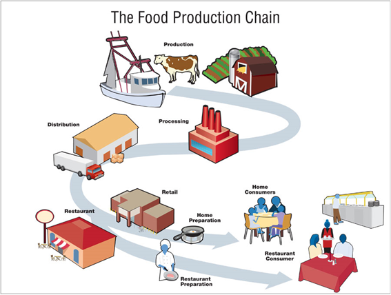
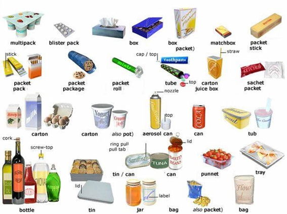
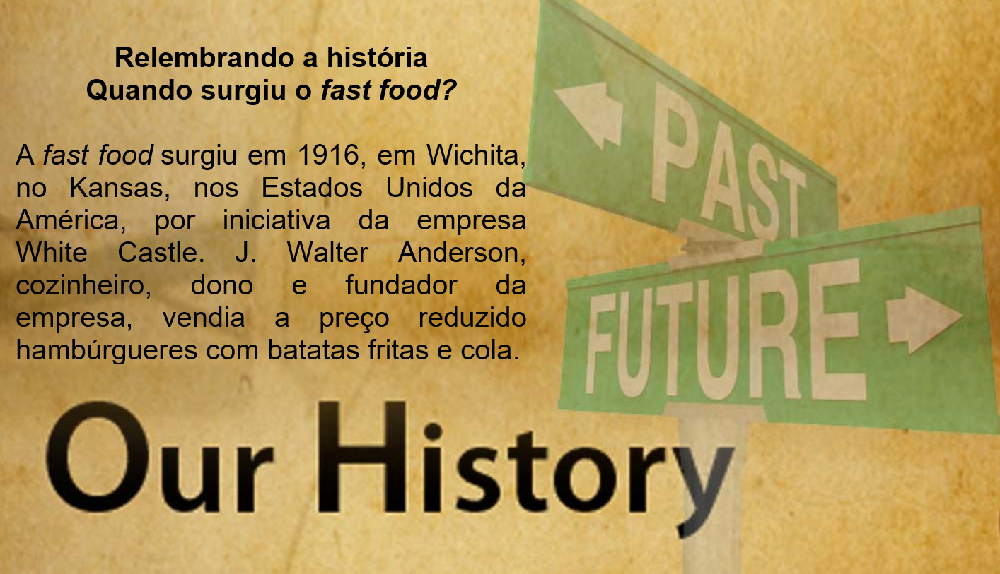

Capítulo 5: Food Industry – Indústria Alimentícia
Vamos iniciar essa unidade de indústria alimentícia com a “The food production chain”, cadeia de produção alimentícia. Vamos ver onde tudo inicia até chegar em nossas mesas.
Glossário da imagem:
• Production > produção
• Distribution > distribuição
• Restaurant > restaurante
• Retail > varejo
• Processing > processamento
• Home preparation > preparação caseira
• Home consumer > consumidor caseiro
• Restaurant consumer > consumidor no restaurante
Você sabia
Para saber mais sobre os rótulos e que contém realmente em cada embalagem de produtos americanos acesse o site e veja sobre as leis dos labels (rótulos).
https://www.nbcnews.com/5e2a1b42-f0d1-49a0-a0e8-f79f96c2eda1
Contextualizando – Análise de rótulos alimentícios
Na alimentação é inevitável não fazer relação com a química e os processamentos que um alimento passa. Todos esses processos químicos e substâncias devem constar nos labels (rótulo). Para que saibamos o que estamos ingerindo. Vamos analisar esse rótulo, conhecer novas palavras.
Glossário:
Calories > calorias
Sat fat > gordura saturada
Sodium > sódio
Sugars > açúcares
Agora você já pode analisar labels e verificar se é uma HEALTH FOOD or UNHEALTHY FOOD.
Pictionary de PACKAGES (embalagens)

Apple – maçã
Orange – laranja
Lemon – limão
Banana – banana
Tangerine – mexerica
Grapes – uvas
Pineapple – abacaxi
Pear – pêra
Apricots – damasco
Peaches – pêssego
Strawberries – morango
Raspberries – amora
Honeydew melon- melão
Avocado – abacate
Papaya – mamão
Mango – manga
Kiwi – kiwi
Watermelon – melancia
Figs – figo
Prunes – ameixa preta
Guava – goiaba
Cashew nut – caju
Coconut – coco
Vegetables = vegetais
Tomato – tomate
Potato – batata
Pepper – pimentão
Beans – vagem ou feijão
Peas – ervilha
Carrots – cenoura
Cabbage – couve ou repolho
Broccoli – brócolis
Cauliflower – couve-flor
Garlic - alho
Cucumbers – pepino
Corn – milho
Lettuce – alface
Onion – cebola
Drinks = bebidas
Water – água
Coffee – café
Tea – chá
Juice – suco
Milk – leite
Soda - refrigerante

Reconstruindo o conhecimento – Uso do there to be past
Caso você não saiba, there is e there are é o modo como falamos “há” ou “tem” (no sentido de existir) em inglês. There is e there are são usados para falar sobre coisas no presente, coisas do agora. Mas, quando a situação vira história (passado), devemos fazer uso de there was e there were.
Não há muito o que se confundir com essas coisas. Afinal, tratam-se de expressões (ou locuções) que possuem usos específicos e tudo o que você precisa aprender é quando usar uma ou outra.
Sobre esse tal de aprender o uso a melhor maneira é com exemplos. Portanto, nada de ficar decorando regras disso e daquilo, conjugação do verbo to be e essas chatices todas.
Quanto mais exemplos e comparações você fizer com a língua portuguesa melhor. Portanto, veja os exemplos abaixo:
• There was a book on the table. (Tinha um livro em cima da mesa. | Havia um livro em cima da mesa.)
• There was a boy outside. (Tinha um menino lá fora. | Havia um menino lá fora.)
• There was a baby crying. (Tinha um bebê chorando. | Havia um bebê chorando.)
• There were two books on the table. (Tinha dois livros em cima da mesa. | Havia dois livros em cima da mesa.)
• There were three boys outside. (Tinha três meninos lá fora. | Havia três meninos lá fora.)
A diferença entre there was e there were é uma só:
• there was é usado no singular
• there were é usado no plural.
Aplicando ao nosso conteúdo
There were six can of Coke. > Tinha 6 latas de Coca-cola.
There was one potato chips. > Tinha uma batata frita.
There were not yogurts. > Não tinha iogurtes.
There was not apple in the basket. > Não tinha maçã na cesta.
O que aprendi
• Aprendemos vocabulário sobre a indústria alimentícia;
• Observamos algumas curiosidades sobre esse setor;
• Aprendemos o uso do there to be past;
• Aprendemos a analisar os rótulos em inglês.
Veja mais sobre o uso do THERE TO BE PAST no vídeo
Praticando
Leia com atenção os rótulos. Um é o original e o outro é o new (novo). Compare e faça uma lista em inglês com as diferenças usando o THERE WAS/WERE.
Após a comparação, diga qual o mais completo? Original or new label?
Liste ao menos quatro dos processos industriais dessa imagem

_________________________
_________________________
_________________________
_________________________
_________________________
_________________________